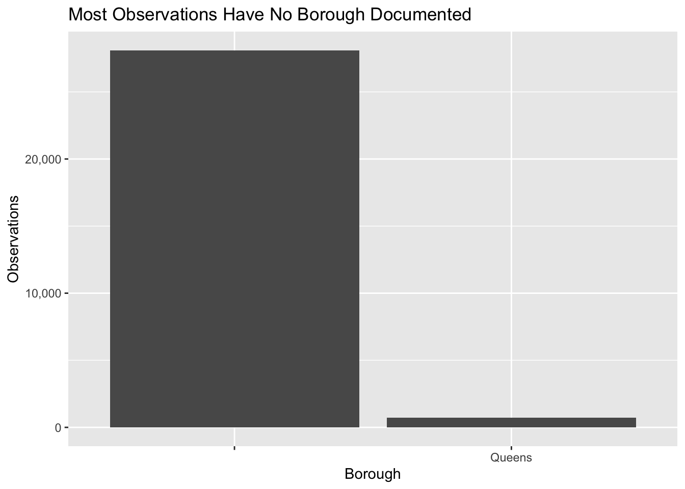

Chapter 4 Missing values
First, there are many observations in the recycling dataset with the month field not populated. As the problem appears about the occur uniformly across boroughs and zones, we have opted to simply show the NA data in our later graph.
As mentioned previously, the borough field was not populated for most observations in the key building energy use dataset, as shown below. The solution for this missing data was discussed previously, we map to a dataset on zipcode to fill the missing boroughs.

The EV data is very well documented. There are no missing values that we feel the need to impute. We add in predictions for future values in the dataset for analysis in the results section.